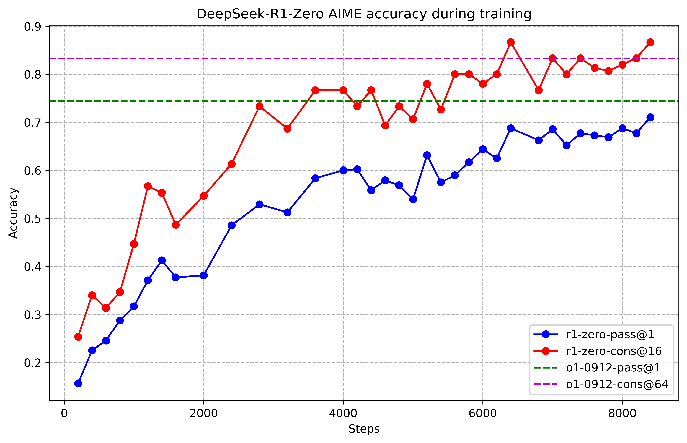
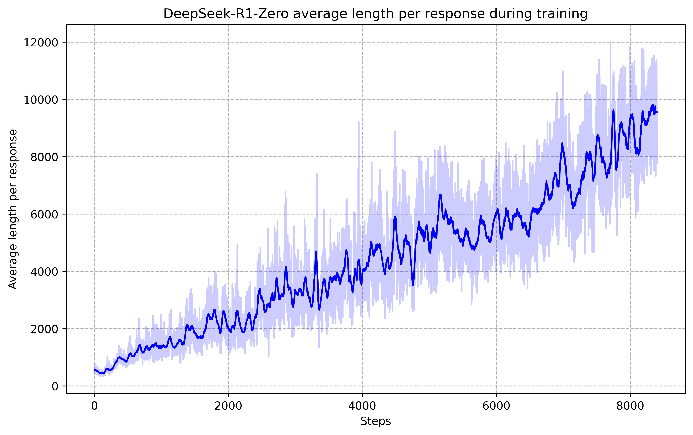

DeepSeek-R1：从可验证奖励到长链推理与小模型蒸馏¶
💡 R1 通过可验证任务上的大规模强化学习，让基础模型发展出长链推理，再用冷启动、拒绝采样、通用对齐和蒸馏，把这种能力变成可用的对话模型与小模型。
论文：DeepSeek-R1；官方代码与权重；补充解读。本文结合 2025 年 v1 与 2026-01-04 的扩展版 v2；实验有变化处单独标注。仓库双语全文对应 v1，不代表 v2 全文。
R1 研究的问题是：除了模仿人工写好的思维链，语言模型能否根据“答案是否正确”的反馈，自行学出更有效的推理过程？论文先用 R1-Zero 验证在没有推理 SFT 的情况下直接进行强化学习，再用多阶段训练解决输出难读、语言混用和通用能力的问题。核心结果同时涉及训练时的策略优化和测试时的计算扩展：模型逐渐生成更长、包含检查和回溯的解答，R1 在 AIME 2024、MATH-500 与竞赛编程上接近同期 o1。扩展版进一步公开数据、超参数、训练成本和安全评估，也表明效果依赖基础模型能力及奖励可靠性，不能仅归因于“多写一些思考”。
两条实验线与基础模型¶
R1-Zero 和 R1 都从 DeepSeek-V3-Base 出发，即 671B 总参数、每个 token 激活约 37B 的 MoE。R1-Zero 的研究目标是尽量减少人为指定推理过程；R1 的目标则是兼顾推理、可读性与通用对话。这里的“Zero”指没有先做推理轨迹监督微调，不表示基础模型没有经过大规模预训练，也不表示没有人工设计任务、验证器和输出模板。
R1-Distill 则是另一条线：用 R1 生成的数据，对 Qwen/Llama 学生做 SFT。学生并不是把 671B 的参数直接压缩到较小维度，也没有在本文中再进行 RL。
GRPO：同题多解形成相对优势¶
对一道题 \(q\)，旧策略采样 \(G\) 条完整输出 \(o_1,\ldots,o_G\)，得到奖励 \(r_1,\ldots,r_G\)。组内标准化得到序列级优势：
同一条轨迹的 token 共用这一优势，策略比率为 \(\rho_{i,t}=\pi_\theta(o_{i,t}\mid q,o_{i,<t})/\pi_{\rm old}(o_{i,t}\mid q,o_{i,<t})\)。目标为：
KL 项使用逐 token 的估计 \(\pi_{\rm ref}/\pi_\theta-\log(\pi_{\rm ref}/\pi_\theta)-1\)。GRPO 的主要资源优势是省去与策略规模相当的价值模型；基线来自同一道题的采样组，而非额外训练 critic。组内相对比较也意味着奖励必须能区分候选：全错或全对时，同组没有有效的相对正确性信号。
R1-Zero 的奖励与自发行为¶
Zero 使用两类规则奖励：数学检查最终答案，代码在受控环境中执行测试；格式奖励要求把思考与答案分别放进 <think> 和 <answer> 标签。扩展版说明准确性奖励与格式奖励等权。它没有给每一步推理人工标注分数，也没有用学习型奖励模型给 Zero 的输出打偏好分。

图为 v1 的 AIME 2024 曲线：训练起点 15.6%，最终约 71.0%；64 次采样多数投票为 86.7%。v2 报告的延长训练终点为 77.9%，不要把两个版本的单次结果当成同一训练终点；它们也都不同于正式 R1 的 79.8%。

生成长度随着训练增加。论文展示模型在没有显式教授“反思模板”的条件下，出现重新检查、发现错误和换思路的输出。但长度与正确率的共同上升本身并不证明每一段思考都有效，更不等于已经解释这些行为在网络内部如何形成。
v2 在 MATH 难度分层中补充：容易题较早达到约 0.90–0.95；最高难度题从约 0.55 提高至 0.90。三位专家选定的反思词列表中，相关词频增加约 5–7 倍；“wait”在训练后期明显增多。这是输出行为的统计证据，不能单凭词频断定某一条思维链确实进行了可靠的逻辑检查。
Zero 的问题也很直接：输出可读性差、语言混用，有时生成很长但不够规整的思考。因此正式 R1 并没有坚持完全取消 SFT。
R1 的多阶段训练¶
冷启动：先给出可读的轨迹形态¶
先整理几千条高质量长链样本，对 V3-Base 做 SFT。来源包括长 CoT 提示、Zero 的正确输出，以及人工整理。扩展版说明还进行了语言统一、摘要添加和人工核查。第一人称思考及对话风格在这里有人工设计，不能把正式 R1 的全部输出风格都解释为 RL 自发涌现。
推理 RL：正确性与语言一致性¶
在数学、代码、科学及逻辑任务上开展 RL，并加入语言一致性奖励，缓解思考与提问语言不一致。可验证奖励仍是核心，语言一致性改善阅读体验，可能对代码成绩有小幅代价；扩展版的这项具体消融是在蒸馏的 Qwen-7B 上完成，不能直接当作 671B 的独立消融。
拒绝采样：把探索结果重新整理成监督数据¶
从推理阶段模型采样，保留正确、可读的解答，得到约 60 万条推理数据；另加入约 20 万条通用数据，覆盖写作、问答、翻译等。部分非规则可判题目使用 V3 根据参考答案判定。过滤还去掉混合语言、异常长段落等不利于阅读的样本。
用合计约 80 万条数据再训练 V3-Base：v1 写两轮 SFT；v2 给出更完整的 2–3 轮配置，学习率从 \(5\times10^{-5}\) 余弦下降至 \(5\times10^{-6}\)，长度 32,768、batch 128。以正确轨迹监督学习，把前一阶段的探索成果固定下来，同时恢复通用能力。
全场景 RL：推理与偏好对齐¶
最后混合可验证推理任务与通用偏好任务。通用有用性主要评价最终摘要，避免仅因思考长就得高分；安全性则评估包括推理在内的整个输出。v2 说明通用指令和偏好训练只进入第二次 RL 的最后 400 步，原因是长时间优化学习型奖励会出现 reward hacking。
扩展版公开的数据与训练配置¶
| RL 数据类型 | 规模 | 反馈方式与特点 |
|---|---|---|
| 数学 | 26k | 简短答案核验；没有把难以可靠自动检查的数学证明直接纳入同类规则奖励 |
| 竞赛代码 | 17k | 执行测试用例 |
| 缺陷修复 | 8k | 程序与测试反馈 |
| STEM | 22k | 以有明确答案的科学问题为主 |
| 逻辑 | 15k | 逻辑题与可执行验证等 |
| 通用有用性 | 66k | 学习型奖励 |
| 安全提示 | 12k | 与安全奖励配合 |
这些规模对应 RL 提示集合，不是前述 80 万条 SFT 轨迹。训练语料主要为中文和英文。扩展版还介绍代码冷启动问题来自 5,151 道 Codeforces 和 2,504 道 AtCoder 题：先用正确提交检查自动生成的测试，再保留能识别错误提交的测试，以提高验证器质量。
| 配置 | R1-Zero（v2） | R1 第一次 RL（v2） |
|---|---|---|
| 学习率 / KL 系数 | \(3\times10^{-6}\) / 0.001 | \(3\times10^{-6}\) / 0.001 |
| 采样温度 / 同题组大小 | 1 / 16 | 1 / 16 |
| 每步不同提示数 | 32 | 32 |
| 参考模型更新 | 每 400 步 | 每 400 步 |
| 最大输出 | 前 8.2k 步 32,768，之后 65,536 | 32,768 |
| 总步数 | 10,400 | 见论文各阶段配置 |
一次 rollout 收集 8,192 条输出，分为 16 个 minibatch，单个内部 epoch。v2 对第一次 RL 给出的裁剪参数为 \(\epsilon=10\)，应按该实验配置记录，不能套用其他 PPO 实现的 0.2。第二次 RL 把温度降至 0.7，总计 1,700 步。
有用性奖励模型使用 66k 对偏好数据：V3 多次判断并交换候选顺序，保留差异足够明确的样本，并平衡 chosen/rejected 长度。安全奖励模型使用约 106k 条标注样本。两者以相同架构加标量预测头训练，batch 256、学习率 \(6\times10^{-6}\)、一轮、训练长度 8,192。它们服务于正式 R1 的通用对齐，不能与 Zero 的纯规则奖励混淆。
评测设置与主要结果¶
推理题默认 temperature 0.6、top-p 0.95，最大生成 32,768 token；多次采样后平均估计 pass@1。v2 明确 AIME/GPQA 采 64 次，MATH/Codeforces 16 次，LiveCodeBench 8 次。平均单次正确率、至少一次成功的 pass@64，以及多数投票 cons@64 是三种指标。
| 基准与指标 | DeepSeek-V3 | DeepSeek-R1 | o1-1217 |
|---|---|---|---|
| AIME 2024，pass@1 | 39.2 | 79.8 | 79.2 |
| MATH-500，pass@1 | 90.2 | 97.3 | 96.4 |
| GPQA Diamond，pass@1 | 59.1 | 71.5 | 75.7 |
| LiveCodeBench，pass@1 | 36.2 | 65.9 | 63.4 |
| Codeforces，rating | 1134 | 2029 | 2061 |
| SWE-bench Verified，resolved % | 42.0 | 49.2 | 48.9 |
| Aider，accuracy % | 49.6 | 53.3 | 61.7 |
| FRAMES，accuracy % | 73.3 | 82.5 | — |
| IFEval，prompt strict % | 86.1 | 83.3 | — |
结果显示提升集中于数学、算法代码与复杂问答；工程代码并没有全面领先，指令遵循也不是所有项目都优于 V3。SWE 使用 Agentless 框架，Aider 使用 diff 格式；LiveCodeBench 为 2024-08 至 2025-01 的题目，Codeforces 由十场 Div.2 竞赛估算。闭源 o1 的部分结果引用官方报告，不能假定所有模型都由作者在完全相同的本地推理栈重跑。
通用指标还包括 MMLU 90.8、MMLU-Pro 84.0、DROP 92.2、SimpleQA 30.1、C-Eval 91.8。知识问答中的剩余错误说明更强推理并不自动消除事实性错误。v2 补充 AIME 2025 pass@1 为 75%，同期 o1 为 80%，用较晚发布的题目进一步检查泛化。
蒸馏：能力通过轨迹迁移¶
| 学生模型 | AIME pass@1 | AIME cons@64 | MATH-500 | GPQA | LiveCodeBench |
|---|---|---|---|---|---|
| Qwen-1.5B | 28.9 | 52.7 | 83.9 | 33.8 | 16.9 |
| Qwen-7B | 55.5 | 83.3 | 92.8 | 49.1 | 37.6 |
| Qwen-14B | 69.7 | 80.0 | 93.9 | 59.1 | 53.1 |
| Qwen-32B | 72.6 | 83.3 | 94.3 | 62.1 | 57.2 |
| Llama-8B | 50.4 | 80.0 | 89.1 | 49.0 | 39.6 |
| Llama-70B | 70.0 | 86.7 | 94.5 | 65.2 | 57.5 |
上述为 v1 蒸馏表中的结果。不同学生除了参数规模，基础模型训练与架构也不同，不能把跨家族差异当成纯参数 scaling 曲线。32B 上直接进行超过 10k 步 RL 的 Qwen2.5-32B-Zero，AIME 为 47.0；蒸馏模型为 72.6。在该设置下，来自强教师的轨迹比小模型自行探索更有效，但并不证明所有小模型 RL 都无效。
长链、采样与失败尝试¶
v2 在 366 道 2024 年竞赛题上报告 R1 单次正确率 61.8%，平均约 8,793 个思考 token；较易题低于 7,000，最难题超过 18,000。GPT-4o 对应为 24.7%、约 711 个输出 token；即使对后者做多次投票，也未消除差距。不过这类比较同时改变了模型和训练方法，不能从中推出固定 token 预算的普遍最优分配法。
R1 的长链也会陷入错误：AIME pass@64 为 90.0%，明显高于单次 79.8%；cons@64 为 86.7%。长链内部探索与多条轨迹的外部采样可以互补，而不是互相替代。
论文报告两类没有成为主线的方法。过程奖励模型难以定义与标注可靠的推理步骤，训练中还会被利用；MCTS 面对语言空间的巨大分支、较弱价值估计和高训练成本，没有复现棋类中的成功。扩展版进一步指出，较弱的 7B dense 与 16B MoE 基础模型会在拉长输出后反复生成，未得到同样的 AIME 收益，基础模型能力是重要条件。
系统、成本与安全评估¶
v2 公开 Zero 使用 512 张 H800、198 小时，合计约 101,376 GPU 小时；正式 R1 的 RL 为 512 张 H800、80 小时，即约 40,960 GPU 小时，SFT 数据构建另约 5,000 GPU 小时。这些是相应后训练环节的计算量，不含 V3 基础模型预训练，也不能直接换算成完整研发成本。
基础设施把 rollout、奖励与参考模型推理、CPU 规则执行及训练拆开，并异步重叠执行。生成侧使用 vLLM、专家并行、热点专家复制及多 token 预测；训练侧按长度排序并 packing，结合 DualPipe 减少空泡。长输出带来的资源开销因此既是算法问题，也是调度和系统问题。
扩展版增加六类公开安全基准、多语言与越狱评估，区分裸模型和官方服务的外部风控。官方服务会先标记可能高风险的对话，再用 V3 审核；服务级结果不能直接当作下载权重的内在安全性。50 种语言测试中，R1 裸模型平均安全分约 74.2%，加入风控约 85.9%；这依赖论文的测试集与判分器。越狱仍显著影响各模型，也增加拒答，说明正确率、拒答率和安全回答率需要分别看。
局限与论文结论¶
R1 展示了可靠奖励、大模型基础能力与 RL 探索结合的价值，也通过 SFT 与蒸馏说明推理轨迹可以传播。但函数调用、多轮交互、角色扮演及结构化输出仍有不足，数据主要是中英双语，语言混用没有完全消失。通用学习型奖励容易被过度优化，代码和证明的验证器质量直接限制训练效果。
作者对评测做了 10-gram 去污染，并删除大量可能重合的数学文本，但明确承认这种方法不能排除改写后的测试题。长链输出也不保证忠实解释内部计算。论文支持的结论是：在其基础模型、任务与验证条件下，结果奖励驱动的 RL 能明显强化推理；正式可用模型仍需要监督数据、通用对齐、测试时计算及系统配套共同完成。